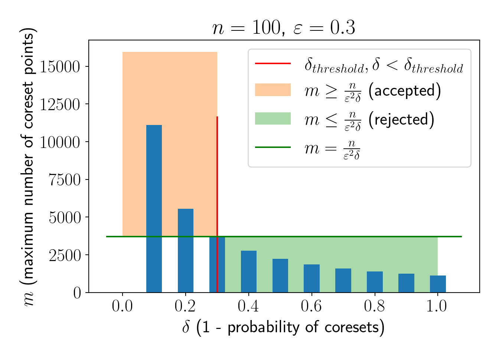

Coresets: 3 Coresets for KMeans (Theory)
This chapter’s motive is to highlight the key ideas behind KMeans coreset construction and give intuitive proofs for some of the ideas. For more details, please refer to Bachem, Lucic, and Krause (2017).
3.1 Problem formulation
In the KMeans clustering problem, we aim to cluster the dataset \(X \in R^d\) of cardinality \(n\) in \(K\) seperate clusters. If \(Q\) is a set of cluster centers for KMeans in this problem, we can define the cost as the following,
\[ cost(X, Q) = \frac{1}{n}\sum\limits_{x\in X}f_Q(x) = \frac{1}{n}\sum\limits_{x\in X}\min\limits_{q\in Q}||x-q||^2_2 \]
If \(C\) of cardinality \(n'\) is a weighted coreset constructed from dataset \(X\), \(n'<<n\) is our desired property. Note that \(c \in C\) are i.i.d. samples. \(C\) is a valid \(\varepsilon\)-coreset of \(X\) if the following property holds for any \(Q\) with high probability \(\delta\) (\(\delta\) can be quantified),
\[ |cost(X, Q) - cost(C,Q)| \le \varepsilon cost(X,Q) \]
There is a derived result of the above theorem, which is more useful in practice. If \(Q^*_X\) is optimal cluster centers obtained by executing KMeans on full dataset \(X\) and \(Q^*_C\) is optimal cluster centers obtained by executing KMeans on coreset \(C\), the following property holds with high probability,
\[ cost(X,Q^*_X) \le cost(X, Q^*_C) \le \frac{1+\varepsilon}{1-\varepsilon}cost(X, Q^*_X) \]
Note that, in practice, computing \(Q^*_X\) is not feasible. Thus we are willing to bear a higher cost up to \(\frac{1+\varepsilon}{1-\varepsilon}cost(X, Q^*_X)\) at the benefit of reduced computational time. This property ensures that cost on the coreset stays within the defined upper bound without actually computing \(Q^*_X\) (which is obvious but just being explicit).
We need to find a method to construct the coreset \(C\) such that the above properties hold with high probability (yes, nothing is deterministic in the probabilistic world). Let us try a naive method first.
3.2 Uniform sampling
The first idea that comes to mind for coreset construction is uniform random sampling. We will mathematically see if a coreset constructed by uniform random sampling is useful or not. First we need to verify if \(cost(C, Q)\) is an unbiased estimator of \(cost(X, Q)\). Intuitively, we can say that, over multiple choices of coresets \(C\), we expect value of \(cost(C, Q)\) to stay closer to \(cost(X, Q)\) and if we take \(\mathbb{E}_C(cost(C,Q))\) over a long run, it should converge to \(cost(X, Q)\). Now, let us prove the same as following,
\[\begin{aligned} \mathbb{E}_C(cost(C, Q)) &= \mathbb{E}_C\left(\frac{1}{m}\sum\limits_{c \in C}f_Q(c)\right)\\ &= \frac{1}{m}\sum\limits_{c \in C}\mathbb{E}(f_Q(c))\\ &= \frac{1}{m}\sum\limits_{c \in C}\sum\limits_{x \in X}\frac{1}{n}f_Q(x)\\ &= \frac{1}{m}\sum\limits_{c \in C}cost(X,Q)\\ &= cost(X, Q) \end{aligned}\]We saw that \(cost(C,Q)\) converges to \(cost(X,Q)\) in expectation. But, we need to minimize \(Var(cost(C,Q))\) as well, so that \(cost(C,Q)\) is as close as possible to \(cost(X,Q)\).
\[\begin{aligned} Var(cost(C,Q)) &= Var(\frac{1}{m}\sum\limits_{c \in C} f_Q(c))\\ &= \frac{1}{m^2}\sum\limits_{c \in C}Var(f_Q(c))\\ &\le \frac{1}{m^2}\sum\limits_{c \in C}\mathbb{E}(f_Q(c)^2) = \frac{1}{m^2}\sum\limits_{c \in C}\frac{1}{n}\sum\limits_{x \in X}f_Q(x)^2\\ &\le \frac{1}{nm^2}\sum\limits_{c \in C}\left(\sum\limits_{x \in X}f_Q(x)\right)^2\\ &= \frac{1}{nm^2}\sum\limits_{c \in C}\left(n\cdot cost(X,Q)\right)^2\\ &= \frac{n}{m^2}\sum\limits_{c \in C}cost(X,Q)^2\\ &= \frac{n}{m}cost(X,Q)^2 \end{aligned}\]We can see that \(m \to \infty\) then \(Var(cost(C,Q)) \to 0\). Let us get an estimate of \(m\) using Chebyshev’s inequality.
\[ P\left(|cost(C, Q) - cost(X, Q)| \ge k\sqrt{\frac{n}{m}}cost(X,Q)\right) \le \frac{1}{k^2} \] Substituting \(k\sqrt{\frac{n}{m}} = \varepsilon \to k = \varepsilon\sqrt{\frac{m}{n}}\).
\[ \delta = P\left(|cost(C, Q) - cost(X, Q)| \ge \varepsilon \cdot cost(X,Q)\right) \le \frac{n}{\varepsilon^2m}\\ \]
The above expression suggests that if we are interested in \(\varepsilon\)-coreset with atleast (\(1-\delta\)) probability, we need to discard all \(m \le \frac{n}{\varepsilon^2\delta}\). Thus we have \(m \ge \frac{n}{\varepsilon^2\delta}\). The same phenomenon is illustrated in the below plot,

Looking at the numbers, to construct the coreset with atleast 70% probability for dataset of size \(n=100\), we need to sample atleast \(m=\frac{n}{\varepsilon^2\delta}=4000\) points. This is clearly not useful. Also, note that \(m \propto n\), so, coreset size will increase as \(n\) increases maintaining \(m>>n\).
Thus, this method fails to construct a coreset. One may want to have a look at an intuitive example given in Bachem, Lucic, and Krause (2017). We need to change our sampling strategy to build better coresets. Let us move to importance sampling now.
3.3 Importance sampling
Let us say we sample each point \(x\) with probability \(q(x)\). In this process, we might not have \(cost(C,Q)\) as an unbiased estimator of \(cost(X,Q)\) anymore. Thus, we need to introduce weights \(\mu_C(c), c \in C\).
We will use the weighted \(cost(C, Q)\) as defined below,
\[ cost(C, Q) = \frac{1}{m}\sum\limits_{c \in C} \mu_C(c)f_Q(c) \]
Let us find out a value of \(\mu_C(c)\) such that \(\mathbb{E}_C(cost(C,Q))\) converges to \(cost(X, Q)\)
\[\begin{aligned} \mathbb{E}_C(cost(C,Q)) &= \mathbb{E}_C\left(\frac{1}{m}\sum\limits_{c \in C} \mu_C(c)f_Q(c)\right)\\ &= \frac{1}{m}\sum\limits_{c \in C}\mathbb{E}(\mu_C(c)f_Q(c))\\ &= \frac{1}{m}\sum\limits_{c \in C}\sum\limits_{x \in X}q(x)\mu_C(x)f_Q(x)\\ \text{Now, we should take }\mu_C(x) = \frac{1}{nq(x)}\\ &= \frac{1}{m}\sum\limits_{c \in C}\sum\limits_{x \in X}q(x)\frac{1}{nq(x)}f_Q(x)\\ &= \frac{1}{m}\sum\limits_{c \in C}\frac{1}{n}\sum\limits_{x \in X}f_Q(x)\\ &= \frac{1}{m}\sum\limits_{c \in C}cost(X, Q)\\ &= cost(X, Q) \end{aligned}\]Now, we shall calculate the \(Var(C(C, Q))\) and find the conditions that minimize it.
\[\begin{aligned} Var(cost(C,Q)) &= Var\left(\frac{1}{m}\sum\limits_{c\in C}\mu_C(c)f_Q(c)\right)\\ &= \frac{1}{m^2}\sum\limits_{c\in C}Var\left(\mu_C(c)f_Q(c)\right)\\ &= \frac{1}{m^2}\sum\limits_{c\in C}\left(\mathbb{E}\left(\left(\mu_C(c)f_Q(c)\right)^2\right) - \left(\mathbb{E}\left(\mu_C(c)f_Q(c)\right)\right)^2\right)\\ &= \frac{1}{m^2}\sum\limits_{c\in C}\left(\sum\limits_{x\in X}q(x)\left(\mu_C(x)f_Q(x)\right)^2 - \left(\sum\limits_{x\in X}\left(q(x)\mu_C(x)f_Q(x)\right)\right)^2\right)\\ &= \frac{1}{m^2}\sum\limits_{c\in C}\left(\sum\limits_{x\in X}q(x)\left(\frac{1}{nq(x)}f_Q(x)\right)^2 - \left(\sum\limits_{x\in X}\left(q(x)\frac{1}{nq(x)}f_Q(x)\right)\right)^2\right)\\ &= \frac{1}{n^2m}\left(\sum\limits_{x\in X}\frac{(f_Q(x))^2}{q(x)} - \left(cost(X,Q)\right)^2\right) \end{aligned}\]If we choose \(q(x) = \frac{f_Q(x)}{\sum\limits_{x \in X}f_Q(x)}\), \(Var(cost(C,Q)) = 0\). Intuitively it is sensible, because we give more priority to the points that individually contribute more in the total cost (\(f_Q(x)\) is high).
We have done this calculation for a single set of clusters \(Q\), but we need to generalize this to any \(Q\). Note that currently, \(q(x)\) depends on \(Q\), which should be avoided for generality.
To generalize importance sampling further, we need a concept called sensitivity, which is intuitively proportional to \(q(x)\) but is more general and does not depend on any particular \(Q\).
3.3.1 Sensitivity
Sensitivity \(\sigma(x)\) is defined as the following for all \(Q, Q \in \mathcal{Q}\), where \(\mathcal{Q}\) is the set of all possible cluster centers (really? How do we find all possible cluster centers? We do not need to find them. We have other tricks to do that which is currently out of scope for this report. Please refer to Bachem, Lucic, and Krause (2017) later).
\[ \sigma(x) = \sup\limits_{Q \in \mathcal{Q}}\frac{f_Q(x)}{cost(X,Q)} \]
We can see that optimal \(Q\) might not be the same for all \(x\) and thus calculating \(\sigma(x)\) might be another problem. But, we introduce a general upper bound \(s(x)\) on \(\sigma(x)\). We have average sensitivity \(S = \frac{1}{n}\sum\limits_{x \in X}s(x)\). Now, we can modify our sampling distribution \(q(x)\) as following,
\[ q(x) = \frac{1}{n}\frac{s(x)}{S} = \frac{s(x)}{\sum\limits_{x \in X}s(x)} \]
Now, we try to get an estimate of a lower bound on \(m\). Consider the following function \(g_Q(x)\).
\[ g_Q(x) = \frac{f_Q(x)}{n\cdot cost(X,Q)}\frac{1}{Sq(x)} \]
Using Hoeffding’s inequality, we have the following formula,
\[ P\left(\left|\mathbb{E}(g_Q(x)) - \frac{1}{m}\sum\limits_{x \in X}g_Q(x)\right| > \varepsilon'\right) \le 2\exp\left(-2m\varepsilon'^2\right) \]
One can verify that \(|\mathbb{E}(g_Q(x)) = \frac{1}{S}\) and \(\frac{1}{m}\sum\limits_{x \in X}g_Q(x) = \frac{cost(C,Q)}{Scost(X,Q)}\). Using the same result, we get,
\[ P(\left|cost(X,Q) - cost(X,Q)\right| > \varepsilon'Scost(X,Q)) \le 2\exp\left(-2m\varepsilon'^2\right) \]
Hence, we can say that if \(C\) is \(\varepsilon\)-coreset of \(X\) with atleast (\(1-\delta\)) probability, estimate of \(m\) is the following,
\[ m \ge \frac{S^2}{2\varepsilon^2}\log_e\frac{2}{\delta} \]
We can see that, \(m \propto S^2\), in case we consider \(s(x)=n\) and so effectively \(S=n\), we have \(m \propto n^2\) (which is worst than original dataset itself). But, we have other ways to create tighter bounds \(s(x)\) to build useful coresets. Note that, tighter the bound \(s(x)>\sigma(x)\), better coresets we get.
3.3.2 Rough approximation
Using the rough approximation techniques, we can find a theoretically bounded approximation of \(cost(X, Q)\) with much lesser computational power. One of the approaches used here is \((\alpha, \beta)\) bi-criterion approximation.
\((\alpha, \beta)\) approximation states that, for a set of cluster centers \(Q_B\) of cardinality \(|\beta K|\), the following property holds,
\[ cost(X, Q_B) < \alpha\;cost(X, Q^*_X) \]
Arthur and Vassilvitskii (2007) give an efficient algorithm that holds \((\alpha, \beta)\) bi-criterion. Traditionally, the algorithm is known as the \(D^2\) sampling algorithm, which is also given below,
Algorithm 1: \(D^2\) sampling
Require: dataset \(X\), number of clusters \(K\).
- Sample \(x\) from \(X\) uniform randomly or preavailable weights. set \(Q_B=\{x\}\)
- for i \(\to\) \(2, 3, ..., K\) do sample \(x\) from \(X\) with probability \(p(x) = \frac{d(x, Q_B)^2}{\sum\limits_{x' \in X}d(x', Q_B)^2}\) and add \(x\) to \(Q_B\).
- return \(Q_B\)
Arthur and Vassilvitskii (2007) also shows that the following result holds with at least \(\delta\) probability when \(Q^*_B\) is best cluster centers selected by running the \(D^2\) sampling algorithm \(\log_2\frac{1}{1-\delta}\) times.
\[ cost(X, Q^*_B) \le 16(\log_2K+2)cost(X, Q^*_X) \]
3.3.3 Bounding sensitivity
Now, the final Lemma combines all the concepts we have seen thus far and gives a tighter bound on sensitivity \(s(x)\).
For each point \(x \in X\), we define a set of points \(X_x\) that share a common cluster center \(b_x \in Q^*_B\), then the sensitivity \(\sigma(x)\) is bounded by,
\[\begin{aligned} \bar{c}_B &= \frac{1}{n}\sum\limits_{x \in X}d(x, b_x)\\ s(x) &= \frac{2 \alpha\;d(x, b_x)^2}{\bar{c}_B} + \frac{4\alpha\;\sum\limits_{x \in X_x}d(x, b_x)}{|X_x|\bar{c}_B} + \frac{4n}{|X_x|}\\ S &= 6\alpha + 4K \end{aligned}\]This result also holds for any \(Q \in \mathcal{Q}\). Please refer to Bachem, Lucic, and Krause (2017) for the proof and subtle details.
3.3.4 Algorithm to create KMeans coreset
Now, combining all the steps, the algorithm to generate KMeans clustering can be given as the following,
Algorithm 2: Coreset construction for KMeans clustering
Require: dataset \(X\), number of clusters \(K\).
- Run \(D^2\) algorithm multiple times on the original dataset \(X\) to get \(Q^*_B\).
- calculate sensitivity scores \(s(x)\) and effectively \(S\)
- calculate probability distribution \(q(x) = \frac{s(x)}{nS}\)
- sample a set of points \(C\) from \(X\) using \(q(x)\) until the coreset property is satisfied.
- Run Weighted KMeans algorithm on \(C\) considering the weights \(\mu_C(x) = \frac{1}{q(x)}\) (not \(\frac{1}{nq(x)}\) because \(n\) will be anyway considered in the average cost)
- Resultant cluster centers set \(Q^*_C\) is an approximated set of cluster centers theoretically closer to \(Q^*_X\).
In the next chapter, we will implement the importance sampling in coresets for KMeans clustering step by step.